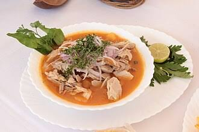

Inicio
Encebollado

Ingredientes e instrucciones
El encebollado ecuatoriano es una sopa de pescado concentrada y aromática, considerada el plato insignia de la gastronomía de Ecuador. Su receta tradicional combina un caldo especiado con albacora (un tipo de atún), yuca tierna y una cantidad generosa de encurtido de cebolla colorada.
Ingredientes
- Albacora
- Yuca
- Cebolla Roja (Paiteña)
- Chifle
Instrucciones
- Agrega el pescado la cebolla picada finamente ramas de culantro cilantro pasta de tomate en una olla y dejalo cocinar
- Agrega la yuca
- Sirve el plato con cebolla colorada en julianas y con chifle o con pan o cualquier acompañante